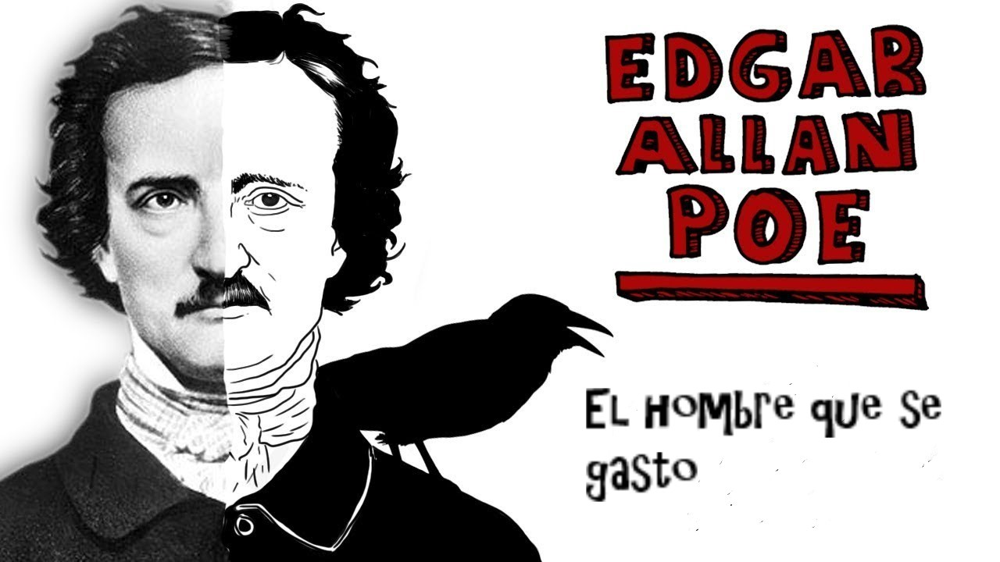
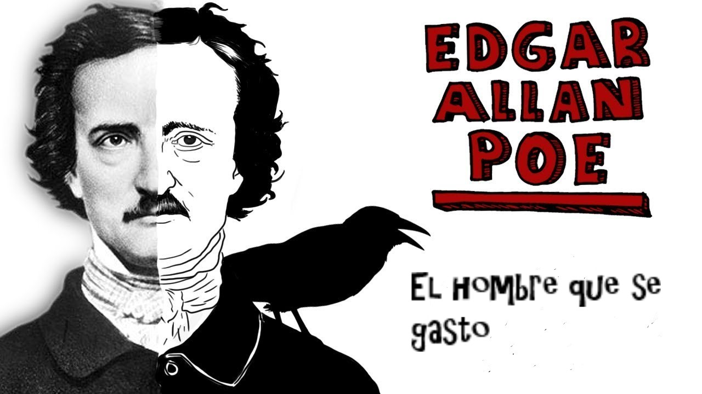
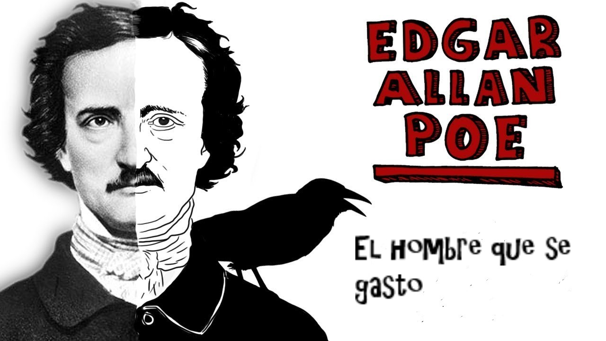

Un relato de la reciente campaña contra los cocos y los kickapoos
Pleurez, pleurez, mes yeux, et
ondez vous en eau! La moitié de ma
vie a mis l?autre au tombeau.
(CORNEILLE)
No recuerdo ahora dónde o cuándo vi por primera vez a aquel apuesto militar, el brigadier general honorario John A. B. C. Smith. Sin duda, alguien me presentó a él en alguna ceremonia pública, ¡naturalmente!, presidida por alguna persona muy importante, ¡claro está!, en un sitio o en otro, ¡por supuesto!, aunque me haya olvidado inexplicablemente de su nombre. Debo decir que esperé aquella presentación en un estado de nervios que me impidió formarme una idea bien definida del lugar y del tiempo. Soy constitucionalmente nervioso; es un defecto de familia, y no lo puedo impedir. La menor apariencia de misterio, la cosa más ínfima que no alcance a comprender, bastan para sumirme de inmediato en un estado de lamentable agitación.
Había por así decir algo notable —sí, notable, aunque el término es muy débil para expresar plenamente lo que quisiera dar a entender— en la apariencia de aquel personaje. Tenía probablemente seis pies de estatura y un aspecto muy imponente. Se notaba en él un air distingué que hablaba de una refinada cultura y hacía suponer una alta cuna. Sobre este tema —el de la apariencia personal de Smith— siento una especie de melancólica satisfacción en ser minucioso. Su cabello hubiera hecho honor a un Bruto; ondulábase de la manera más extraordinaria, y tenía un brillo incomparable. Era de un negro azabache, y este color —o, mejor dicho, este no-color— era asimismo el de sus inimaginables patillas. Ya habréis advertido que no puedo hablar sin entusiasmo de estas últimas; no es decir demasiado si afirmo que eran el más hermoso par de patillas existentes bajo el sol. Flanqueaban, y a veces hasta cubrían en parte la más perfecta boca imaginable, donde lucían los dientes más regulares y más blancos que concebirse puedan. En cada ocasión apropiada nacía de aquella boca una voz sumamente clara, melodiosa y bien timbrada. Con respecto a los ojos, Smith estaba igualmente muy bien dotado. Cada uno de los suyos valía por un par de órganos oculares ordinarios. Muy grandes y brillantes, tenían pupilas de un color castaño profundo, y una que otra vez se advertía en ellos esa ligera e interesante oblicuidad que da tanta fuerza a la expresión.
El torso del general era sin duda alguna el más hermoso que haya visto jamás. En vano se hubiera querido encontrar alguna falla en sus maravillosas proporciones. Tan rara peculiaridad ponía de manifiesto, muy ventajosamente, unos hombros que hubieran provocado el rubor de la humillación en el Apolo de mármol. Me apasionaban los hombros, y puedo decir que jamás había visto perfección semejante. Los brazos estaban igualmente bien modelados, y los miembros inferiores no les iban en zaga en cuanto a perfección. Eran realmente el nec plus ultra de las piernas hermosas. Todo conocedor de la materia reconocía que aquellas piernas eran notables. Ni demasiado carnosas, ni demasiado flacas; ni rudeza ni fragilidad. Imposible imaginar una curva más graciosa que la del os femoris; ni siquiera faltaba la suave prominencia de la parte posterior de la fibula, que contribuye a la conformación de una pantorrilla debidamente proporcionada. Hubiera pedido a los dioses que a mi amigo y talentoso escultor Chiponchipino le fuera dado contemplar las piernas del brigadier general honorario John A. B. C. Smith.
Empero, aunque los hombres tan apuestos no abundan tanto como las razones o las zarzamoras, me resultaba imposible creer que lo notable a que he aludido, ese extrañó je ne sais quoi que envolvía a mi reciente conocido, procediera tan sólo de la acabada perfección de sus dones corporales. Quizá emanara de su actitud, pero tampoco en esto puedo ser demasiado afirmativo. Había un estiramiento, por no decir rigidez, en su actitud, un grado de precisión mesurada y, si se me permite decirlo así, rectangular, en todos sus movimientos, que en una persona más pequeña hubiera parecido lamentable afectación o pomposidad, pero que en un caballero de las dimensiones del general no podía atribuirse más que a reserva, a hauteur y, en una palabra, al loable sentido de lo que corresponde a la dignidad de las proporciones colosales.
El excelente amigo que me presentó al general Smith me dijo al oído algunas frases elogiosas sobre el militar. Era un hombre notable, muy notable, y en realidad uno de los más notables de la época. Gozaba de especial favor ante las damas, sobre todo por su alta reputación de hombre valeroso.
—En ese terreno es insuperable. No hay nadie más temerario que él. Un verdadero paladín, sin la menor duda —dijo mi amigo con un susurro, llenándome de excitación por el misterio que había en su voz.
—Sí, un paladín completo, a no dudarlo. Y lo demostró, a fe mía, durante la última y terrible lucha en los pantanos del sud, contra los indios cocos y los kickapoos. (Aquí mi amigo abrió mucho los ojos.) ¡Dios me asista! ¡Cuánta sangre, pólvora... todo lo imaginable! ¡Prodigios de valor! Supongo que ha oído usted hablar de él... Probablemente no ignora que es el hombre que...
—¡Vaya, vaya! ¿Cómo está usted? ¿Cómo le va? ¡Cuánto me alegro de encontrarlo! — lo interrumpió en ese momento el general en persona, tomando del brazo a mi amigo e inclinándose rígida pero profundamente cuando le fui presentado.
Pensé en aquel momento (y lo sigo pensando) que jamás había escuchado una voz tan clara y resonante, ni contemplado semejante dentadura. Pero debo reconocer que lamenté que nos hubiera interrumpido justamente cuando, después de los murmullos y las insinuaciones que anteceden, me sentía interesadísimo por el héroe de la campaña contra los cocos y los kickapoos.
Empero, la deliciosa y brillante conversación del brigadier general honorario John A. B. C. Smith no tardó en disipar completamente mi disgusto. Como nuestro amigo se marchó casi de inmediato, sostuvimos un largo tête-à-tête, y no sólo quedé muy complacido sino que aprendí muchas cosas. Jamás he oído a un narrador más fluido, ni a un hombre más informado. Con loable modestia, sin embargo, se abstuvo de tocar el tema que más me apasionaba —aludo a las misteriosas circunstancias referentes a la guerra contra los cocos—, y por mi parte, una delicadeza que considero oportuna me vedó mencionar la cuestión, pese a que me sentía tentadísimo de hacerlo. Noté asimismo que el valeroso militar prefería los tópicos de interés filosófico y que se complacía especialmente en comentar el rápido progreso de las invenciones mecánicas. Cualquiera fuera el rumbo de nuestro diálogo, volvía invariablemente a ocuparse del asunto.
—No hay nada comparable a esto —decía—. Somos un pueblo admirable y vivimos en una edad maravillosa. ¡Paracaídas y ferrocarriles... trampas perfeccionadas y fusiles de gatillo! Nuestros barcos a vapor recorren todos los mares, y el globo de Nassau se dispone a efectuar viajes regulares (a sólo veinticinco libras el pasaje) entre Londres y Timboctú. ¿Quién puede prever la inmensa influencia sobre la vida social, las artes, el comercio, la literatura, que habrán de tener los grandes principios del electromagnetismo? ¡Y le aseguro a usted que no es todo! El progreso de las invenciones no conoce fin. Las más admirables, las más ingeniosas... y permítame usted agregar, Mr... Mr. Thompson, según creo, permítame agregar, digo, que los dispositivos mecánicos mas útiles, los más verdaderamente útiles... surgen día a día como hongos, si es que puedo expresarme así o, más figurativamente, como... sí, como saltamontes... como saltamontes, Mr. Thompson... en torno de nosotros... ¡ja, ja!... en torno de nosotros.
Mi nombre no es Thompson; pero de más está decir que me separé del general Smith con multiplicado interés por su persona, imbuido de una altísima opinión sobre sus dotes de conversador y una profunda convicción de los valiosos privilegios que gozamos por vivir en esta época de invenciones mecánicas. Mi curiosidad, sin embargo, no había quedado completamente satisfecha, y resolví de inmediato hacer averiguaciones entre mis amistades sobre el brigadier general honorario y sobre los tremendos sucesos quorum pars magna fuit durante la campaña de los cocos y de los kickapoos.
La primera oportunidad que se me presentó y que (horresco referens) no tuve el menor escrúpulo en aprovechar, aconteció en la iglesia del reverendo doctor Drummummupp, donde un domingo, a la hora del sermón, me encontré no solamente instalado en uno de los bancos, sino al lado de mi muy meritoria y comunicativa amiga Miss Tabitha T. Apenas la descubrí, me congratulé por el buen cariz que tomaban mis asuntos, y no me faltaba razón, ya que si alguien sabía alguna cosa sobre el brigadier general honorario John A. B. C. Smith, esa persona era Mis Tabitha T. Nos telegrafiamos unas cuantas señales y empezamos sotto voce un animado tête-à-tête.
—¿Smith? —dijo ella, en respuesta a mi ansiosa pregunta—. ¿Querrá usted decir el general A. B. C.? ¡Dios me asista, hubiera jurado que estaba al tanto de todo! ¡Un episodio tan horrible! ¡Ah, esos kickapoos, qué monstruos sanguinarios! Sí, luchó como un héroe... prodigios de valor... renombre inmortal. ¡Smith! ¡Brigadier general honorario John A. B. C.! Vamos, bien sabe usted que se trata del hombre que...
—¡El hombre —gritó el doctor Drummummupp con todas sus fuerzas, y con un puñetazo que estuvo a punto de romper el pulpito—, que ha nacido de mujer, sólo vivirá poco tiempo; así como crece, así es cortado como una flor! Me apresuré a correrme al extremo del banco, advirtiendo por las miradas que me echaba el predicador que la cólera, poco menos que fatal para el pulpito, provenía de los murmullos entre la dama y yo. No había nada que hacerle; me sometí, pues, resignadamente, y escuché envuelto en el martirio de un silencio digno el resto de aquel importantísimo discurso.
A la noche siguiente acudí algo tarde al teatro Rantipole, donde estaba seguro de satisfacer inmediatamente mi curiosidad mediante el simple expediente de entrar al palco de aquellas exquisitas muestras de afabilidad y omnisciencia, las señoritas Arabella y Miranda Cognoscenti. El notable trágico Climax representaba a Yago ante un público numeroso, y me costó algún trabajo hacerme entender, máxime cuando nuestro palco estaba casi suspendido sobre la escena.
—¡Smith! —dijo Miss Arabella, que por fin comprendió mi pregunta—. ¡Smith! ¿El general John A. B. C.?
—¡Smith! —coreó pensativamente Miranda—. ¡Dios me bendiga! ¿Vio usted alguna vez un hombre de mejor estampa?
—Jamás, amiga mía; pero, por favor, dígame usted...
—¿Y una gracia tan inimitable?
—Nunca, bajo palabra de honor. Pero quisiera saber...
—¿O un sentido tan profundo de la escena?
—¡Señorita!
—¿O una apreciación más delicada de las verdaderas bellezas de Shakespeare? ¡Mire usted qué piernas!
—¡Oh, qué demonios! —dije, y me volví otra vez hacia su hermana.
—¡Smith! —repitió ella—. ¿No será el general John A. B. C.? ¡Ah, qué horrible fue aquello! ¿No es cierto? ¡Y qué miserables los cocos... de un salvajismo...! Afortunadamente vivimos en una época de tantas invenciones... ¡Smith, oh, sí, un gran hombre! ¡Temerario hasta el límite! ¡Renombre inmortal! ¡Prodigios de coraje! ¡Nunca oí nada parecido! (Esto fue dicho a gritos.) ¡Dios me asista! Ya sabe usted, es el hombre que...
...ni la mandragora Ni todos lo elixires somníferos del mundo Te proporcionarán jamás ese dulce sueño De que gozaste ayer!
—aulló Climax casi en mi oído y agitando el puño delante de mi cara en una forma que no pude ni quise tolerar. Me separé inmediatamente de las señoritas Cognoscenti, pasé entre bastidores y, al aparecer aquel pillo, le di una paliza que espero recordará hasta el día de su muerte.
Durante la soirée en casa de una encantadora viuda, Mrs. Kathleen O’Trump, me sentí seguro de que no volvería a sufrir una decepción. Apenas nos habíamos sentado a la mesa de juego, teniendo a mi bonita huéspeda vis-à-vis, le hice las preguntas cuya respuesta se había convertido en algo tan esencial para mi tranquilidad de espíritu.
—¡Smith! —dijo mi amiga—. ¿Supongo que alude usted al general John A. B. C.? ¡Qué terrible episodio! ¿Oros, dijo usted? ¡Ah, esos kickapoos, qué miserables! Por favor, Mr. Tattle, estamos jugando al whist... De todas maneras ésta es la época de las invenciones... ciertamente es la época par excellence... ¿habla usted francés? ¡Sí, un héroe, y de una temeridad increíble! ¿No tiene usted corazones, Mr. Tattle? ¡Imposible! ¡Sí, un renombre inmortal... prodigios de valor! ¿Qué nunca había oído hablar de él? ¡Cómo! ¡Si se trata del hombre que...!
—¿Hombrequet? ¿El capitán Hombrequet? —interrumpió desde lejos y a gritos una invitada—. ¿Está usted hablando del capitán Hombrequet y del duelo? ¡Oh, quiero escuchar lo que dicen! ¡Por favor, Mrs. O’Trump... siga usted, le suplico que siga contando!
Y así lo hizo Mrs. O’Trump, emprendiendo una narración sobre un cierto capitán Hombrequet, a quien habían ahorcado o muerto a tiros, o que por lo menos lo merecía. ¡Palabra! Y como Mrs. O’Trump continuaba indefinidamente... acabé por marcharme. Aquella noche me sería imposible escuchar nada referente al brigadier general honorario John A. B. C. Smith.
Me consolé, sin embargo, pensando que tanta mala suerte no podía durar siempre, y me decidí audazmente a procurarme informaciones en los salones de fiesta de aquel hechicero angelillo, la graciosa Mrs. Pirouette.
—¡Smith! —exclamó ésta mientras dábamos vueltas y vueltas en un pas de zéphyr— ¿Se refiere usted al general John A. B. C.? ¡Ah, qué terrible esa historia de los cocos! ¿No es cierto? ¡Qué gentes tan horribles son los indios! ¡Ponga la punta de los pies hacia afuera! ¿No le da vergüenza? Un hombre valerosísimo, el pobre... Pero vivimos en una época de maravillosas invenciones... ¡Dios mío, me falta el aliento! ¡Sí, un coraje temerario! ¡Prodigios de valor! ¿Que nunca oyó usted hablar de él? ¡Imposible! ¡Tengo que sentarme y hacérselo saber! ¡Si justamente Smith es el hombre que...!
—¡Man-fredo! —gritó Miss Sabihonda, en momentos en que yo llevaba a Mrs. Pirouette hacia un sofá—. ¿Cómo sé puede decir semejante cosa? ¡Le aseguro que se trata de Man-fredo y no de Man-frido!
Y como Miss Sabihonda me tomara por testigo de la manera más perentoria, me vi precisado, quisiera o no, a terciar en la solución de una disputa referente al título de cierto drama poético de Lord Byron. Y aunque afirmé de inmediato que el verdadero título era Man-frido, y de ninguna manera Man-fredo, apenas me volví en busca de Mrs. Pirouette descubrí que se había perdido de vista, por lo cual me marché de su casa envuelto en la más amarga animosidad contra la entera raza de las sabihondas.
Las cosas se estaban poniendo muy serias, y resolví visitar sin pérdida de tiempo a mi amigo íntimo Mr. Theodore Sinivate, pues estaba seguro de obtener de él alguna información precisa.
—¡Smith! —exclamó, con su peculiar manera de arrastrar las palabras—. ¿No se tratará del general John A. B. C.? Triste asunto ese de los kickapoos, ¿no es cierto? Una temeridad extraordinaria... ¡una lástima verdaderamente! ¡Qué época, qué maravillosos inventos! ¡Prodigios de valor! Dicho sea de paso, ¿no oyó hablar usted del capitán Hombrequet?
—¡Que se vaya al diablo el capitán Hombrequet! —repuse—. Por favor, siga con su relato.
—¡Ejem! Pues bien... es exactamente la même cho-o-ose, como decimos en Francia. ¿Smith, eh? ¿El brigadier general John A. B. C.? Vea usted... —y aquí Mr. Sinivate creyó oportuno ponerse un dedo contra la nariz—. ¿No pretenderá insinuar, verdadera y conscientemente, que no sabe nada de la historia de Smith? Porque usted habla de Smith, supongo, de John A. B. C., ¿eh? Pues, estimado amigo, se trata del hombre...
—Señor Sinivate —imploré—. ¿Se trata del hombre de la máscara de hierro?
—No-o-o —repuso, con aire de entendido—. Ni tampoco del hombre de la luna.
Consideré que esta réplica constituía un punzante y claro insulto, y abandoné de inmediato la casa, lleno de cólera y dispuesto a exigir a mi amigo Mr. Sinivate una pronta explicación por tan poco caballeresca conducta y tanta mala educación.
Pero, en el ínterin, no estaba dispuesto a renunciar a las informaciones que deseaba. Me quedaba todavía un recurso. Lo mejor sería ir a la fuente misma. Visitaría inmediatamente al general, pidiéndole con palabras explícitas una solución de tan abominable misterio. Aquí al menos, no habría posibilidad de error. Sería llano, positivo, perentorio, tan conciso como Tácito o Montesquieu.
Llegué muy temprano a casa del general, que se estaba vistiendo, pero como insistí en que se trataba de algo urgente, un viejo mucamo negro me hizo pasar al dormitorio, y se quedó allí para servir a su amo. Como es natural, al entrar en la habitación miré en torno buscando a su ocupante, pero no lo distinguí. Había un bulto muy grande y muy raro contra mis pies, y, como no estaba yo del mejor de los humores, le di un puntapié para quitarlo del camino.
—¡Ejem... ejem... no me parece una conducta muy correcta, que digamos! —dijo el bulto con una vocecilla tan débil como curiosa, algo entre chirrido y silbido. Grité de terror y huí diagonalmente hasta refugiarme en el rincón más alejado del dormitorio.
—¡Mi estimado amigo! —volvió a silbar el bulto—. ¿Qué... qué... qué cosa le sucede? ¡Hasta creería que no me reconoce usted!
¿Qué podía yo contestar a eso? Tambaleándome, me dejé caer en un sillón y, con la boca abierta y los ojos fuera de las órbitas, esperé la solución de aquel enigma.
—No deja de ser raro que no me haya reconocido, ¿verdad? —insistió la indescriptible cosa, que, según alcancé a ver, estaba efectuando en el suelo unos movimientos inexplicables, bastante parecidos a los de ponerse una media. Pero sólo se veía una pierna.
Pompeyo se acercó al bulto y le alcanzó una notable pierna artificial, con su media ya puesta, que el bulto se aplicó en un segundo, tras lo cual vi que se enderezaba.
—Y aquella batalla fue harto sangrienta —continuó diciendo la cosa, como si monologara—. Pero no hay que meterse a pelear contra los cocos y los kickapoos y creer que se va a salir de allí con un mero rasguño. Pompeyo, haz el favor de darme ese brazo. Thomas —agregó, volviéndose a mí— es el mejor fabricante de piernas postizas; pero si alguna vez necesitara usted un brazo, querido amigo, permítame que le recomiende a Bishop.
Y a todo esto Pompeyo le atornillaba un brazo.
—Aquella lucha fue una cosa terrible, puedo asegurárselo. Vamos, perillán, colócame los hombros y el pecho. Pettit fabrica los mejores hombros, pero si quiere usted un pecho vaya a Ducrow.
—¡Un pecho! —exclamé.
—¡Pompeyo! ¿Terminarás de ponerme la peluca? Que lo esculpen a uno no tiene nada de agradable, pero a fin de cuentas siempre es posible procurarse un peluquín tan bueno como éste en De L’Orme.
—¡Peluquín!
—¡Vamos, negro, mis dientes! Para una buena dentadura, le aconsejo ir en seguida a Parmly. Cuesta caro, pero hacen trabajos excelentes. En cuanto a mí, me tragué no pocos de mis dientes cuando uno de los indios cocos me machacaba con la culata del rifle.
—¡Culata del rifle! ¡Lo machacaba! ¿Pero qué ven mis ojos?
—¡Oh, ahora que lo menciona... trae aquí ese ojo Pompeyo, y atorníllalo pronto! Esos kickapoos no son nada lerdos para dejarlo a uno tuerto. Pero el doctor Williams es un hombre de talento, y no puede imaginarse lo bien que veo con los ojos que fabrica.
Comencé entonces a percibir con toda claridad que el objeto erguido ante mí era nada menos que mi reciente conocido, el brigadier general honorario John A. B. C. Smith. Debo reconocer que las manipulaciones de Pompeyo habían transformado por completo la apariencia de aquel hombre. Pero su voz me seguía dejando perplejo, aunque el misterio no tardó en disiparse como los otros.
—¡Pompeyo, condenado negro —chirrió el general—, estaría por creer que vas a dejarme salir sin mi paladar!
Murmurando una excusa el negro se acercó a su amo, le abrió la boca con el aire entendido de un jockey y le ajustó en el interior un aparato de singular aspecto, haciéndolo con grandísima destreza, aunque por mi parte no alcancé a ver nada. El cambio en la expresión del general fue tan instantáneo como sorprendente. Cuando habló de nuevo, su voz había recobrado aquella rica tonalidad y potencia que me habían llamado la atención en nuestra primera entrevista.
—¡Malditos sean esos perros! —dijo con una articulación tan clara que me sobresalté—. ¡Malditos sean! No sólo me hundieron el paladar, sino que se tomaron el trabajo de cortarme por lo menos siete octavos de lengua. Pero, afortunadamente, tenemos a Bonfanti, que es inigualable en toda América cuando se trata de artículos de esta especie. Se lo recomiendo a usted con toda confianza —agregó el general, inclinándose— y le aseguro que mucho me complace poder hacerlo.
Agradecí su gentileza lo mejor posible y me despedí de inmediato, perfectamente enterado de la verdad y sin el menor resto de aquel misterio que tanto me había perturbado. Era evidente. Era clarísimo. El brigadier general honorario John A. B. C. Smith era el hombre... que se gastó.
RESEÑA:
Este cuento se centra en develar de forma detallada al Brigadier general honorario John A. B. C. Smith, aquel apuesto militar que todos lo describen como un hombre hermoso, con medidas casi perfectas, con presencia y sobre todo valentía en la batalla sucedida contra los indios Cocos y los Kickapoos en Estados Unidos, dicho personaje se lucía se lucia ante la sociedad, con su inconfundible voz y porte, frente a todos inicia contando lo sucedido en aquella batalla pero no concluye, por lo que uno de los presentes se esmera en saber cómo termino todo.
Tras preguntar a distintas personalidades quienes solo hablan del gran heroísmo y de los avances mecánicos y tecnológicos que se utilizaban en dichas batallas, decide directamente ir con el gran general Smith, para su sorpresa lo encuentra en su casa como un bulto muy grande y raro, este es reconstruido con diversas prótesis un mulato que trabajaba para él, formando así al apuesto militar John A. B. C. Smith quien había sufrido graves lesiones en aquella gran batalla, es decir el hombre que se gasto.
CONCLUSIÓN Y CRÍTICA:
La gran batalla contra los indios Cocos y los Kickapoos, dejan secuelas severas en el militar Smith, muchas personas lo enaltecen por su gran valentía y admirado por su incomparable belleza, sin embargo dicho hombre no cuenta con una piernas, pecho, brazo y otras partes del cuerpo, pero consume las mejores prótesis de alta tecnología, que le permiten mantener aquellos alagos, es importante decir que dicho personaje lucha por mantener aquella imagen de héroe, puesto que si sus admiradores apreciaran su aspecto real, no lo aceptarían en esta sociedad marginal.
